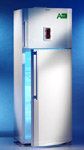
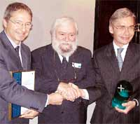

|
Avrupa
Birliði Komisyonu, Arçelik'in Eskiþehir tesislerinde üretilen
buzdolabýný, Avrupa'nýn en az enerji tüketen buzdolabý olarak
belirledi. Arçelik, yenilikçi anlayýþý, ileri teknolojisi
ve çevreye verdiði önem sayesinde, yüzlerce modelin yer aldýðý
European Energy+ Yarýþmasý'nda birinci seçildi.
Bu yýl ikincisi düzenlenen ve Avrupa Birliði Komisyonu'nun
teknoloji iyileþtirme projesi kapsamýnda yürütülen European
Energy+ Yarýþmasý'nda Arçelik, hem kategorisinde birinci seçilmesi,
hem de tüm kategoriler arasýnda "En Az Enerji Tüketen Buzdolabý"ný
üretmesi nedeniyle ödüllendirildi.
|  |
|
Arçelik
Üretim ve Teknoloji Grup Direktörü Turgut Soysal,
Avrupa Birliði Ulaþtýrma ve Enerji Genel Direktörlüðü
Daire Baþkaný Gonzalo Molina-Iguartua, Arçelik'in
Almanya'daki markasý Blomberg'in Yöneticisi Dr.
Heinz Fischer.
|
|
Almanya'nýn
Köln kentindeki Hometech Fuarý'nýn açýlýþý nedeniyle düzenlenen
törende ödülü, Arçelik A.Þ. Üretim ve Teknoloji Grup Direktörü
Turgut Soysal aldý. Soysal, "Kendi teknolojimizle aldýðýmýz
bu ödül, bizim için ayrý bir önem taþýyor. Arçelik ekibinin
dünya çapýnda yeni standartlar oluþturma konusundaki baþarýsý
ile gurur duyuyoruz" dedi.
Yenilikçiliðe,
ileri teknolojiye, çevreye ve doðal kaynaklara verdiði önemle
çift kapýlý buzdolabý kategorisinde ödül alan Arçelik, ayný
zamanda Jüri tarafýndan yapýlan Enerji Verimlilik Endeksi
deðerlendirmesi sonucunda tüm kategoriler arasýnda "En Verimli
Buzdolabý" olarak belirlendi. Arçelik, Energy+ listesinde
bulunan 21 Avrupalý üretici þirket, A+ ve A++ sýnýflarýndan
900 farklý model arasýndan yarýþmaya baþvuranlarý geride býraktý.
Avrupa'da
þu ana kadar ulaþýlan en düþük Enerji Verimlilik Endeksi'ne
sahip olan ödüllü buzdolabý, Arçelik'in Eskiþehir tesislerinde
Türk mühendisler tarafýndan tasarlanýp üretiliyor. Enerji
Verimlilik Endeksi düþtükçe, enerji tasarrufu artýyor. A sýnýfý
bir buzdolabýnýn Enerji Verimlilik Endeksi %42-55 arasýnda
yer alýrken, Arçelik bu oraný %19.81'e düþürmüþ bulunuyor.
Günde 16W'lýk bir ampul kadar enerji tüketen ödüllü buzdolabýnýn
yýllýk tüketimi sadece 137kWh. A sýnýfý bir buzdolabýnýn yýllýk
tüketimi ise 325kWh'ý buluyor. Yani, A sýnýfý bir buzdolabýndan
%58 daha az enerji tüketiyor.
"Energy+
Teknoloji Ýyileþtirme Projesi", Almanya, Fransa, Ýtalya,
Ýngiltere, Hollanda, Avusturya, Belçika, Finlandiya, Norveç,
Portekiz, Ýsveç ve Ýsviçre tarafýndan desteklenerek finanse
ediliyor ve düþük enerji tüketen soðutucu üretiminin geliþtirilmesini
amaçlýyor.
Daha fazla bilgi için:
|